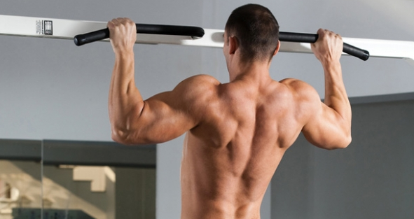

Набиране
Набирането е физическо упражнение за горната част на тялото, при което то, окачено на ръцете се изтегля нагоре.

Техника:
Упражнението започва с изпънати ръце над главата, хващайки лоста за набиране. След това тялото се издърпва нагоре чрез ръцете, при което лактите се огъват, а раменете се разширяват, докарвайки лактите до торса. Упражнението се счита за завършено, когато гърдите, брадичката или врата докоснат лоста.